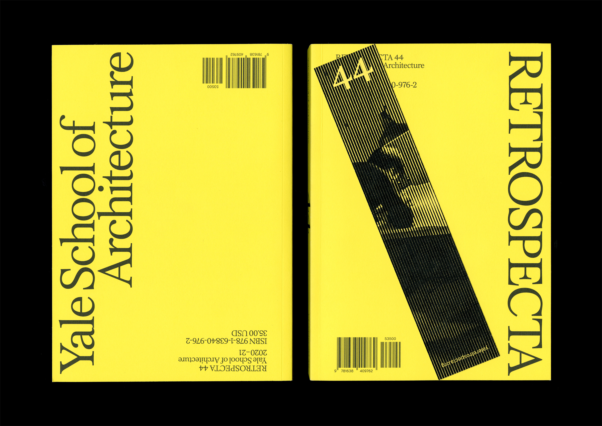
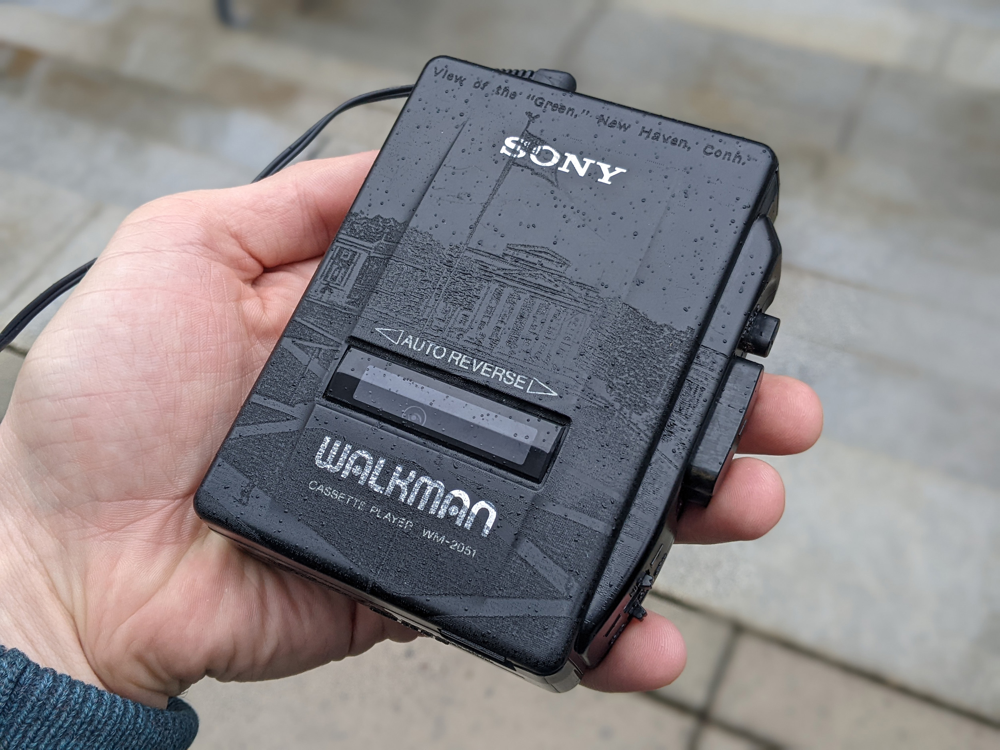
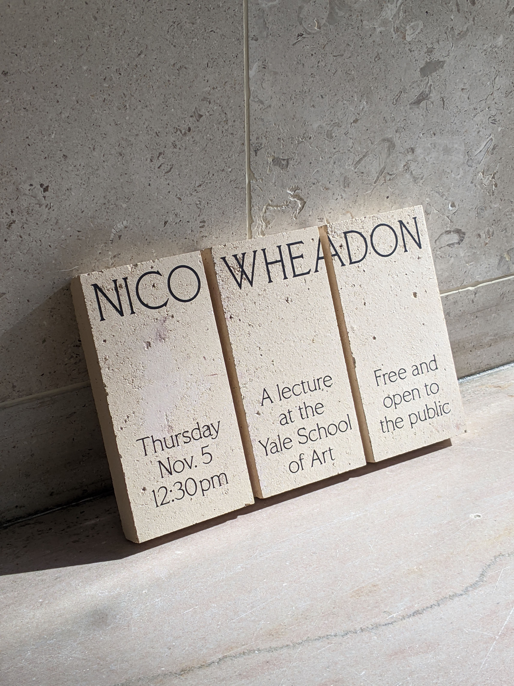
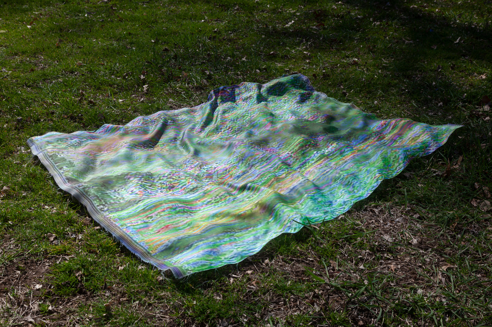
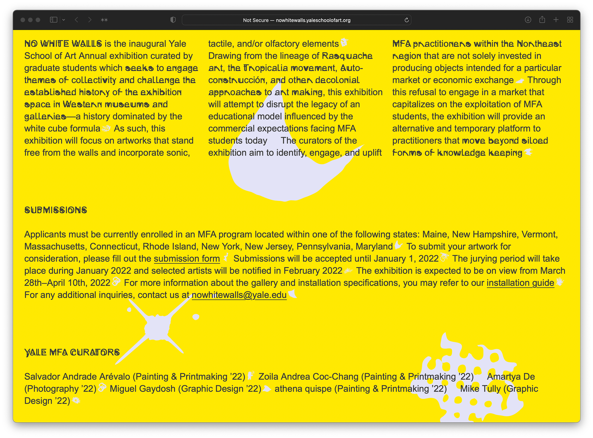

Mike Tully lives and works in New York. He works independently and in collaboration with artists, architects, institutions, and publishers on works spanning artifacts, exhibitions, publications, sound, writing, and websites.
In 2022, he graduated with an MFA from the Yale School of Art, where he was awarded the Critical Practice Research Fellowship and the Beinecke Rare Book and Manuscript Library Research Fellowship.

Retrospecta 44, Yale School of Architecture
Publication with Immanuel Yang

Retrospecta 44 Bookmarks, Yale School of Architecture
Printed matter with Immanuel Yang
A Green Loop
Sound, Design, Writing, Artifact

A Green Loop
Sound, Design, Writing, Artifact
Romance Action Mystery, Yale MFA Photography 2022 Thesis Exhibition
Identity, Exhibition with Hannah Tjaden

French Roman
Type Design

“On Community Memory,” Are.na Annual 2022
Writing, Research
Community Memory
Publication, Performance, Research
AM Radio
Flyer, Sound with Alvin Ashiatey
Martin Kollar Visiting Artist Announcement, Yale Photography
Spatial graphics
Ordinary Monuments
Sound, Performance

Nico Whead on Lecture Announcement, Yale School of Art
Artifact, Type Design
Sans Soleil
Flyer, Screening

Paprika, “Architecture Kool-Aid,” Yale School of Architecture
Publication with Betty Wang
Arthur Jafa's The White Album, Yale School of Art
Poster, Screening
Aria Dean Visiting Artist Announcement, Yale Photography
Screensaver, Type Design

Paprika, “A Field: To Seed, or Not To Seed,” Yale School of Architecture
Publication with Jun Jung
The Weight of A Selfie: Influence, Interface, and Invitation in the Image Economy by Alex Kim
Publication with Julia Schäfer

Perfect Lives: The Park (Privacy Rules)
Performance, Artifact

No White Walls, Yale School of Art Annual Exhibition
Identity, Exhibition, Website, Curation with Miguel Gaydosh
No White Walls, Yale School of Art Annual Exhibition
Identity, Exhibition, Website, Curation with Miguel Gaydosh
No White Walls, Yale School of Art Annual Exhibition
Identity, Exhibition, Website, Curation with Miguel Gaydosh
Excerpts
Publication, Writing
Excerpts
Publication, Writing
Daisy
Writing, Performance

Ordinary Monuments
Publication, Writing

Seeing, Naming, Knowing by Nora Khan
Publication
Words Apart and Others by Jonas Mekas,
Message Ahead ed. by Vyt Bakaitis, Rail Edtions
Publication